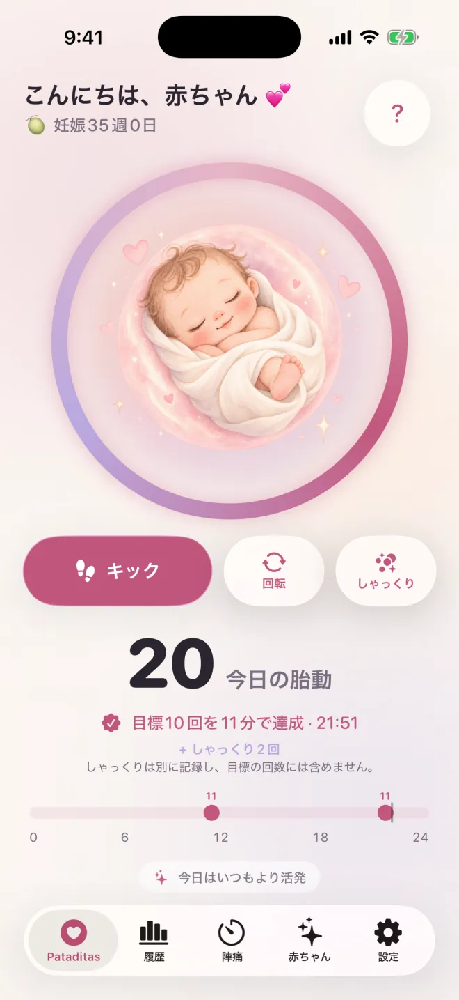

Pataditas / 胎動を数える
胎動を数える：いつから始める？ 何が普通？ いつ連絡する？
「胎動はどのくらいが普通なの？」「いつから数えればいいの？」「いつ連絡すればいいの？」というご質問をよくいただきます。このページでは、胎動についてNHS、Count the Kicks、RCOGが述べていることをまとめ、どこが違うのかも示します。一般的な情報であり、医学的なアドバイスではありません。
かんたんな答え
- 「これが普通」という胎動の回数はありません。大切なのは、赤ちゃん自身のいつものパターンです（NHS、RCOG）。
- 数え方に関する考え方は異なります。Count the Kicksでは28週から10回の胎動を計ることが紹介されていますが、NHSは数える必要はないとしています。
- 胎動が減った、止まった、または変わったときは、昼でも夜でも、すぐに助産師、医師、または産科に連絡してください。翌日まで待たないでください。
胎動（キック）はどのくらいが普通ですか？
「これが普通」という胎動の回数はありません。NHSは、1日に感じるべき胎動の回数は決まっていないとしており、RCOGの患者向けリーフレットも同じことを述べています。大切なのは、あなたの赤ちゃんのいつものパターンと、それが減ったり変わったりしていないかどうかです。
RCOGのリーフレットによると、赤ちゃんには睡眠の時間があり、多くは20〜40分、長くても90分を超えることはまれで、その間は通常動きません。また、午後から夕方がいちばんよく動く時間帯です。胎動の回数は32週ごろまで増える傾向があり、その後はほぼ一定で、出産の直前まで赤ちゃんの動きを感じ続けるはずだとされています。忙しく動いているときは胎動に気づきにくく、胎盤が子宮の前側にある場合は、動きを感じにくいことがあります。
胎動はいつ頃から感じて、いつから数え始めればいいですか？
NHSによると、胎動を初めて感じるのは、多くの場合16〜24週ごろです。初めての妊娠では20週を過ぎてからのこともあります。Count the Kicksでは、28週（リスクが高い場合や多胎妊娠の場合は26週）から毎日数え始めることが紹介されています。NHSは、数える必要はないとしています。
24週までに赤ちゃんの動きを感じない場合は、助産師に伝えてください。助産師が赤ちゃんの心拍と胎動を確認する、とNHSは述べています。助産師や医師から別の時期や方法をすすめられることもあるので、次の健診で相談しましょう。
胎動（キック）はどうやって数えますか？
Count the Kicksでは、赤ちゃんがよく動く時間帯を選び、足を上げて座るか横向きに寝て、かかった時間を計りながら、10回になるまで胎動をひとつずつ数える方法が紹介されています。毎日だいたい同じ時間に行います。キック、突く動き、つつく動き、回転、ふわっとした動きは、どれも数えます。
Count the Kicksは、赤ちゃんの動きの強さや、10回に達するまでの時間に変化を感じたら、すぐに医療提供者に連絡するよう述べています。Pataditasはストップウォッチを使いません。胎動ごとに1回タップすると、アプリがタップをまとめ、2時間以内に10回記録されたことをお知らせします。この2時間というまとめ方はアプリ独自の機能で、医学的な基準ではありません。
胎動を数えることについて、NHSとCount the Kicksの考え方は同じですか？
完全には同じではありません。Count the Kicks（米国）では、28週から（リスクが高い場合や多胎妊娠の場合は26週から）、10回の胎動を感じるまでの時間を計ることが紹介されています。NHS（英国）は、胎動の回数に決まりはなく、数える必要はないが、赤ちゃんのいつものパターンを知っておくことが大切だとしています。
RCOGのリーフレットは、胎動記録表を日常的に使うことをすすめるだけの十分な根拠はなく、赤ちゃん一人ひとりのパターンを意識しておくことのほうが大切だとも述べています。どちらの考え方も、重要な点は共通しています。赤ちゃんの動きがいつもより少ない、止まった、またはパターンが変わったときは、すぐに助産師、医師、または産科に連絡してください。NHSは、夜中でも翌日まで待たずに連絡するよう付け加えています。Pataditasはあなたが感じた動きを記録するだけです。どの方法がよいかは、担当の医療チームに確認してください。
しゃっくりはキックに数えますか？
いいえ。Count the Kicksは、しゃっくりは不随意の動きであるとして数えません。Pataditasではしゃっくりを別の種類として記録でき、履歴には残りますが、10回の胎動には含まれません。しゃっくりか胎動か迷うときは、助産師や医師に聞いてください。
Count the Kicksは、数える胎動として、キック、突く動き、つつく動き、回転、ふわっとした動きを挙げています。RCOGのリーフレットによると、赤ちゃんの動きは、キック、ひらひらとした感じ、ふわっとした動き、回転として感じられます。
赤ちゃんの動きがいつもより少ないときはどうすればいいですか？
昼でも夜でも、すぐに助産師、医師、または産科に連絡してください。NHSは、翌日まで待たず、夜中でもすぐに連絡し、家庭用の心音計で赤ちゃんの様子を確かめようとしないよう呼びかけています。連絡するかどうかの判断を、アプリやカウントの目標に頼らないでください。
RCOGのリーフレットは、すぐに専門家の助けを求めること、胎動の減少や変化を無視したまま眠らないこと、また同じことが再び起きたら、何度でも助産師や産科に再度連絡することを述べています。Count the Kicksは、医療提供者に連絡がつかないときは、最寄りの病院へ行くよう述べています。これは、数えているかどうかにかかわらず、またどのアプリが何を表示していても変わりません。
Pataditasはどう使えますか？ Apple Watchでも使えますか？
Pataditasは、あなたが感じた胎動を記録するiPhoneとApple Watch用のアプリです。キック、回転、しゃっくりを感じるたびに1回タップすると、時刻と種類が保存されます。何かを診断することはなく、赤ちゃんが元気かどうかを判断することもできず、助産師や医師のアドバイスに代わるものでもありません。
Apple Watchでは、コンパニオンアプリ（watchOS 26以降）で、胎動を感じるたびに腕時計の画面をタップして記録できます。文字盤やスマートスタックにPataditasを追加すれば、すぐに開けます。記録はあなたのプライベートなiCloudを通じてiPhoneアプリと同期され、アカウントを作る必要はありません。カウントは無料です。

手順を知りたい方は、iPhoneやApple Watchで胎動を数える方法をご覧ください。
執筆者、情報源、確認状況
執筆：Pataditasを開発しているKaelux創業者のLuis Angel Lucatero Villanueva。このページは一般的な情報であり、医学的なアドバイスではありません。医療従事者による確認は受けておらず、医療に関する記述は以下の情報源に基づき、2026年10月21日に最終確認しました。誤りを見つけたら、hola@rutmia.comまでご連絡ください。
- NHS: Your baby’s movements — ページの最終確認日：2024年7月8日、当サイトでの確認日：2026年10月21日。参照した内容：胎動を初めて感じる時期、胎動の回数に決まりはないこと、数える必要はないこと、夜中でもすぐに連絡すること、家庭用の心音計、24週までに胎動を感じない場合は助産師に伝えること。
- Count the Kicks: Frequently asked questions — ページに日付の記載はなく、確認日：2026年10月21日。参照した内容：数え始める時期（28週、リスクが高い場合や多胎妊娠の場合は26週）、10回の胎動を計る方法、毎日同じ時間帯に数えること、胎動として数えるもの、しゃっくり、すぐに連絡すること。
- RCOG: Your baby’s movements in pregnancy（患者向け情報リーフレット） — 2019年2月発行。RCOGはリーフレットを3年ごとに見直すとしているため、新しい版がある可能性があります。確認日：2026年10月21日。参照した内容：胎動の回数に決まりはないこと、胎動記録表を日常的には使わないこと、一般的な活動と睡眠のパターン、すぐに専門家の助けを求めること。
情報源はすべて英語です。